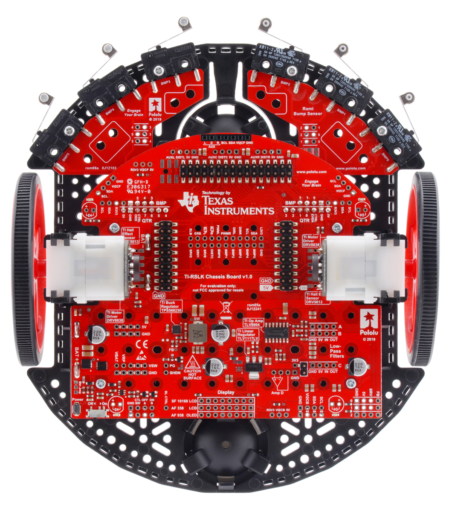
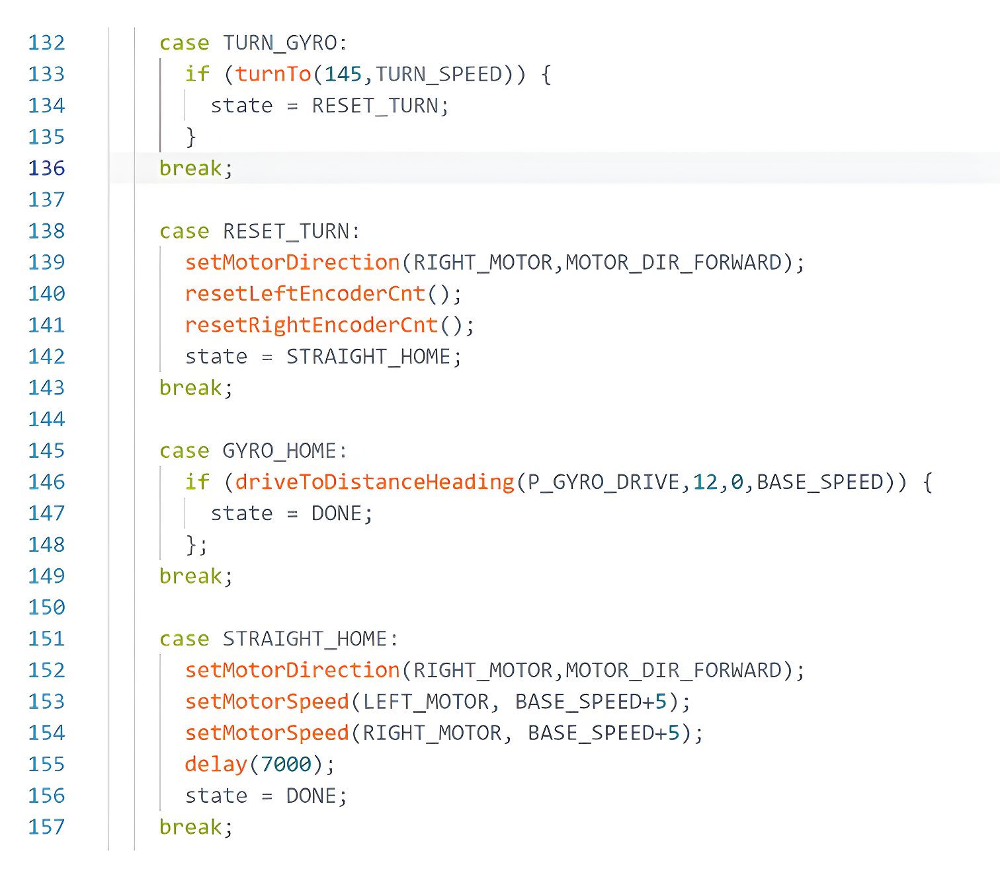

Design & prototyping
Robot Challenge Catapult
EGS 1006C Engineering Design Project · Fall 2023
Project context
Overview
Designed and built a catapult system for an autonomous TI-RSLK robot as part of UCF’s Robot Challenge. The robot followed a line-guided course and launched a rubber duck into a central scoring area, requiring a combination of mechanical design, programming, prototyping, and testing.
The Problem
The challenge was to modify an autonomous line-following robot to transport and launch a rubber duck into a target area. The launcher had to remain stable while the robot navigated the course, then use the impact with the scoring wall to propel the payload into one of three scoring zones. Each team had 10 minutes to complete as many successful runs as possible, making reliability and repeatability just as important as launch distance.
My Role
Worked as part of a four-person team, with my primary focus on designing and building the catapult system used to launch the rubber duck. I constructed the mechanism using interlocking balsa wood and tape and helped integrate it with the provided TI-RSLK robot. I also assisted with tuning the provided line-following code, adjusting parameters such as driving speed and turning speed to improve course performance.
Design & Process
The catapult used a simple impact-activated mechanism. A trigger extended past the front of the robot, and when the robot struck the scoring wall, the trigger pushed a wood piece which rotated to launch the rubber duck.
Because we had plenty of this balsa available, the design was developed through repeated trial and error rather than detailed modeling. Several versions were built and tested while we worked on securely mounting the mechanism to the robot and keeping the duck contained during movement.
Challenges
Two major challenges we faced were securely attaching the catapult mechanism to the robot and keeping the rubber duck contained while the robot traveled through the course. Early versions relied mainly on tape, which was not strong enough to consistently hold the launcher in place. The duck also tended to slide or fall out during turns and rapid acceleration.
Solution / Iteration
To improve the mounting, we used small existing screw holes on the robot along with tape to create a much more secure attachment. To keep the duck in place, we built a simple open-top balsa wood box around it. The rear wall was made slightly shorter than the other walls so it could prevent the duck from sliding out during movement without interfering with the duck’s launch trajectory.
Final Result
The final catapult performed reliably during the competition, successfully launching the rubber duck on every run. Our team finished with a total score of 2,500 points, earning a 100% project grade. Most launches landed in the 300-point scoring zone, with several landing in the 100-point zone. The robot also completed nearly every run autonomously, only needing to be picked up once or twice during the event.
For context, the project rubric awarded a 100% at 1,600 points, so the team finished well above the required score.
What I Learned
This project helped me improve my ability to work effectively as part of a team. With four people contributing to different parts of the robot, we had to communicate, divide responsibilities, and coordinate our work to make sure the mechanical design and robot performance worked together.
Tools Used
Documentation / Visuals
Project Gallery

